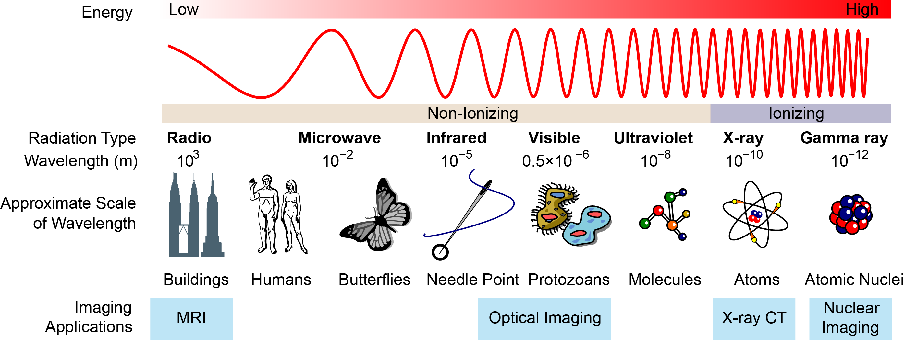
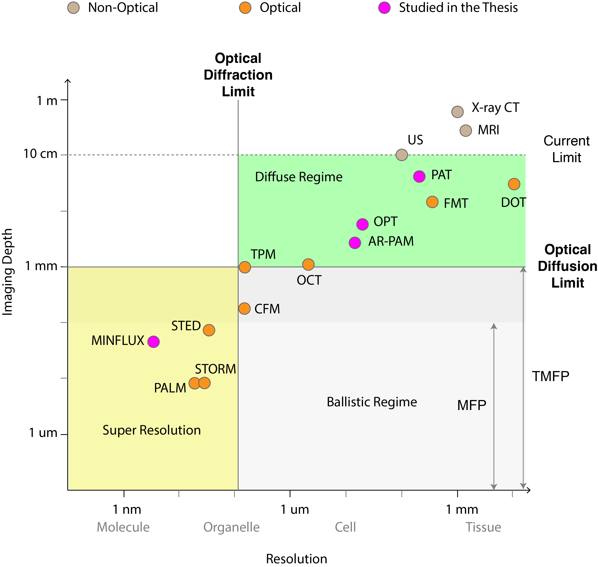

Background¶
Biomedical imaging plays an important role in the advancement of biological research and modern medicine. It dates back to the seventeenth century, when the Dutch microscopist and microbiologist Antonie van Leeuwenhoek first observed unicellular and multicellular organisms with a homemade single-lens optical microscope. Since then, the emergence of novel biomedical imaging technologies has revolutionized many fields in life sciences and healthcare. For example, ultrasound imaging (1940s) [1], X-ray computed tomography (1970s) [2], magnetic resonance imaging (1970s) [3], and nuclear medicine imaging (e.g., single-photon emission computed tomography, 1960s, [4]) have established themselves as routine diagnostic methods in hospitals. In all these modalities, different types of waves are sent to interact with the sample and be recorded on a detector.
Optical Imaging¶
Many imaging modalities rely on the interaction between an electromagnetic (EM) wave and the object under investigation. To provide context, Fig. 1 shows where various medical and biological imaging techniques operate within the EM spectrum.


Fig. 1 Types and scales of electromagentic waves and their application in biomedical imaging. Image adapted from Wikipedia [5].¶
This thesis mainly focuses on optical imaging, which operates with near-infrared and visible light. This type of radiation is non-ionizing and less harmful than high-energy X-rays or gamma rays. Therefore, it makes optical imaging a rather safe technique for patients and biological samples in vivo [6]. Optical coherence tomography (OCT) is a good example. Established in the early 1980s, OCT has evolved as a noncontact and noninvasive imaging technology widely used in ophthalmology [7]. It is able to achieve an excellent spatial resolution of a few micrometers at a considerable penetration depth of one to two millimeters. The clear optical pathway in the eye allows OCT to provide much more detailed information in 3D of the delicate structures of the retina in a much safer fashion than other imaging technologies. Nowadays, OCT is a routine clinical diagnostic procedure for ophthalmic diseases.
Apart from safety, optical imaging has several other advantages compared to other modalities. Optical imaging systems are relatively low-cost. They offer excellent soft-tissue contrast by exploiting various optical properties, including absorption, scattering, refraction, reflection, interference, and fluorescence [6, 8]. For instance, quantitative phase imaging is a label-free and effective method for blood screening and studying the morphology of live cells [9]. Optical imaging is versatile. It extracts various types of information regarding the sample structure and function. For instance, near-infrared spectroscopy records functional information and allows for the monitoring of blood oxygenation levels [10]; optical projection tomography visualizes 3D anatomical models of specimens from microscopic to mesoscopic levels [11, 12, 13]; and fluorescence molecular tomography gives access to molecular information of fluorescent probes, which enables non-invasive studies of biological and pathological processes [14].
Optical imaging is becoming an attractive tool to support disease diagnosis and clinical procedures, for instance, endoscopy and fluorescence-guided cancer surgery [15]. Apart from medical applications, optical imaging also contributes to other fields of scientific research and industrial applications, for instance, the detection of defects in materials [16] and the navigation of autonomous vehicles using LiDAR systems [17].
Resolution and imaging depth are two important aspects for any biomedical imaging technique. Spatial resolution quantifies how fine one can distinguish features. It is inherently bounded by the diffraction limit of light. Imaging depth quantifies how far one can penetrate into the sample. It is limited by optical diffusion, which arises from photon scattering and absorption. There exists a tradeoff between resolution and depth, which we illustrate in Fig. 2 for some common imaging techniques. The current depth of optical imaging techniques is restricted to about 10 cm in soft tissue [18]. Beyond this limit, optical fluence is greatly attenuated such that the detection of meaningful signals is extremely challenging. The ongoing pursuit of finer resolution has yielded significant advances in the field of super-resolution technologies. Extensive research continues to push the boundaries of achievable penetration depths and the tradeoff ratio. In this thesis, we focus on the optical modalities that aim to push these limits.


Fig. 2 Tradeoff between resolution and imaging depth. For definitions of MFP (mean free path), and TMFP (transport mean free path), see section Scattering in chapter Biomedical Optical Imaging for details. CT: computed tomography. MRI: magnetic resonance imaging. US: ultrasound imaging. DOT: diffuse optical tomography. PAT: photoacoustic tomography. FMT: fluorescence molecular tomography. AR-PAM: acoustic-resolution photoacoustic microscopy. OCT: optical coherence tomography. OPT: optical projection tomography. CFM: confocal microscopy. TPM: two-photon microscopy. STED: stimulated emission depletion microscopy. STORM: stochastic optical reconstruction microscopy. PALM: photo-activated localization miroscopy.¶
Computational Imaging¶
This thesis is at the intersection of biomedical optical imaging and computational imaging. While optical engineers and experimentalists devote a considerable amount of effort to perfecting the optical system (i.e., illumination, light transport, lens and image sensor) to improve the quality of acquired raw images, computational imaging scientists contribute to this goal from a software-engineering point of view. They develop mathematical models and advanced algorithms to process the raw experimental data into meaningful and high-quality images through the resolution of mathematically formulated inverse problems. Further, computational imaging also helps scientists to optimize the hardware and to invent new experimental designs, either through mathematical analysis or through computer simulations, which is a cost-efficient and time-efficient alternative to experimental endeavors.
One goal of computational imaging is to reconstruct the original 2D or 3D object from raw experimental data. To this end, the first step is to build a mathematical model based on the underlying physical principles to characterize the imaging system. This model, also called the forward model, is an approximation to the actual physical measurement process that takes place. It is often important to find a balance between the accuracy of the model and its computational feasibility. Then, one formulates an inverse problem, often in the form of the minimization (or maximization) of an objective function, using the forward model and acquired datasets. Finally, one employs computational methods that are rooted in applied mathematics, statistics, and optimization theory to design a tailored reconstruction algorithm. The resolution of the inverse problem yields the unknown target image (also called reconstructed image).
A successful reconstruction depends on the quality of the model, formulation of the inverse problem, choice of the optimization algorithm, and quality of the software implementation. To build a mathematical model that reflects realistic experimental condition, it is necessary that computational imaging scientists interact with imaging practitioners, who can provide valuable insights about the specifications of their systems and data acquisition protocols. In this thesis, we have encountered different types of experimental data during close collaboration with researchers from various fields:
2D projections of 3D samples (optical projection tomography), with the Computational Bioimaging Group at the Idiap institute and the University of Applied Sciences of Western Switzerland;
series of temporally multiplexed acoustic signals of 2D or 3D samples (photoacoustic imaging), with the Helmholtz Zentrum München;
photon counts of single molecules (fluorescent localization microscopy), with the Vienna BioCenter.
In this thesis, we follow the variational framework of inverse problems and formulate them as optimization problems over an objective function \(J\), typically in the following form
The forward model \(\mathbf{A}\) describes the underlying physics of the imaging system, \(\mathbf{b}\) and \(\mathbf{c}\) represent measurements and the unknown quantity of interest, respectively. The first term in the objective function enforces data consistency by minimizing the discrepancy between the model predictions \(\mathbf{A}(\mathbf{c})\) and the measurements \(\mathbf{b}\). The second term \(\mathcal{R}\) contains prior information to drive the solution towards desirable configurations. It is also known as regularization, which is particularly important when the problem is ill-posed. There are many choices of regularization, from traditional (e.g., Tikhonov, sparsity-based) to modern ones based on neural networks (e.g., regularization via denoising [19]). The optimization problem is typically solved using an iterative algorithm. The choice of regularization and algorithm depends on the specific task at hand.
Regarding the code implementation, speed and memory are important factors to consider. In particular, a fast and efficient implementation of the forward model in code and an easy-to-use algorithm that takes full advantage of modern computing technologies are very much desirable. For instance, it is common practice to take advantage of the graphic processing unit (GPU) and construct memory-efficient matrix-free operators whenever possible.
Recently, the rapid development of deep learning has not only revolutionized many areas of science but brought new possibilities, including computational imaging. An example is the usage of automatic differentiation, which is the backbone of deep-learning libraries, to solve inverse problems, for instance, in the field of X-ray imaging [20] and phase retrieval [21]. It allows one to obtain the gradient of the objective function, required by iterative algorithms, when the forward model is so elaborate that it is challenging to derive explicit expressions of the gradient.